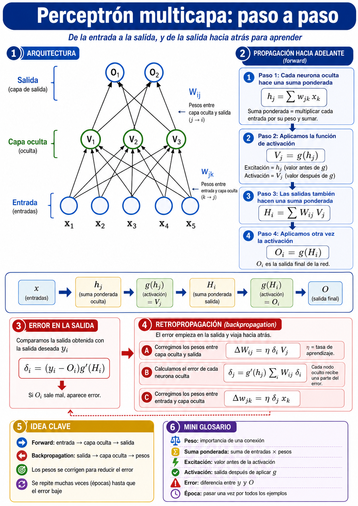

De la entrada a la salida, y de la salida hacia atrás para aprender — los 3 problemas del TP2, paso a paso.
En el perceptrón simple corregimos los pesos que unen la entrada con la salida. Pero, ¿cuál es el error de las neuronas de la capa del medio?
La respuesta es la retropropagación: se propaga el ejemplo hacia adelante (forward), se mide el error en la salida, y ese error viaja hacia atrás repartiéndose entre las neuronas ocultas mediante los pesos. Con eso se corrige toda la red.
Imaginá que tirás una pelota al aro. La ida es el tiro: le mostramos algo a la red (por ejemplo, la imagen de un número) y esa información entra por un lado y sale por el otro convertida en una respuesta.
Adentro, cada neurona hace una cuenta muy simple: agarra los datos que le llegan, les da más o menos importancia (eso son los pesos) y entrega un resultado. Así, paso a paso, la red dice: “esto es un 7”.
Seguimos con la pelota: si erraste el tiro, mirás cuánto te fuiste y corregís para la próxima. La red hace lo mismo: compara su respuesta con la correcta y mide el error.
Lo difícil es saber quién tuvo la culpa adentro de la red. Para eso el error vuelve hacia atrás y le avisa a cada neurona cuánto se equivocó, así cada una se corrige un poquito. Repetir esto miles de veces = aprender. A esa “vuelta” se la llama retropropagación.
Multiplica cada entrada por su peso y las suma. Es la “cuenta base” de la neurona.
“Aplasta” ese número a un rango suave (entre −1 y 1 para hiperbólica, entre 0 y 1 para logística): la neurona decide cuánto se activa.
La salida repite lo mismo, pero usando las neuronas ocultas: suma ponderada + activación.
Mide cuánto se equivocó cada salida (error de salida): la respuesta correcta menos lo que dio la red.
Cada neurona oculta recibe su parte de la culpa, según cuánto influyó en el error.
Mueve cada peso un poquito (paso η) en la dirección que reduce el error.

perceptron_multicapa()Valores pequeños al azar en [-0.1, 0.1], una matriz de pesos por cada par de capas consecutivas.
Se elige un patrón ξμ al azar y se aplica a la capa 0 (entrada).
Se calcula Vim = g(Σ w·V) capa por capa hasta la salida.
δM = g′(h)·(ζ − VM): cuánto se equivocó cada salida.
Se calcula el δ de cada capa oculta usando los pesos de la capa siguiente.
w += η·δ·V para todas las conexiones de la red.
Si error > COTA de iteraciones, volver al paso 2. Guardamos el mejor w.
Aprender la función lógica XOR: salida 1 cuando las entradas son distintas, −1 cuando son iguales. No es linealmente separable, así que necesita la capa oculta.
{1, −1}, el rango natural de la tangente hiperbólica.# entradas XOR y su salida esperada (±1)
data_xor = [[-1,1,1],[1,-1,1],
[-1,-1,-1],[1,1,-1]]
for n in N: # tasa de aprendizaje η
for b in B: # constante β de la activación
w, error, it = perceptron_multicapa(
data_xor, n=n, COTA=10000,
β=b, layers=[2,2,1], tanh_mode=True)
# nos quedamos con el de menor error
# evaluamos los 4 patrones con el mejor w
for patron in data_xor:
esperado = patron[-1]
pred = evaluar_perceptron_multicapa(
np.array(patron), w, 1, β=b, tanh_mode=True)
if np.sign(pred[0]) == np.sign(esperado): aciertos+=1g(h)=tanh(βh) y su derivada β(1−g²), ideal para salidas en {1,−1}.Resultado: la red aprende las 4 combinaciones del XOR (100%), algo imposible para un perceptrón de una sola capa. Lo más difícil fue encontrar η y β: si son muy grandes la red “se pasa” y no aprende; si son muy chicos, casi no se mueve y se queda estancada. Por eso probamos varias y nos quedamos con la mejor (η=0.1, β=1.0).
Cada dígito del 0 al 9 es una imagen de 5×7 = 35 píxeles. La red recibe esos 35 valores y decide si el número es par o impar. Entrenamos con un subconjunto y testeamos con el resto para medir su capacidad de generalizar.
par=[−1,1], impar=[1,−1]).[35, 50, 2].argmax: gana la salida más alta.# cada imagen 5x7 -> 35 bits de entrada
impar, par = outputs_multicapa(2, min=-1, max=1)
for idx in range(len(number_bits)):
target = par if idx%2==0 else impar
labeled_data.append(number_bits[idx] + target)
# separo un subconjunto para test, el resto entrena
test, train = split_test_data(labeled_data,
shuffle_data=True, test_size=0.1)
w, error, it = perceptron_multicapa(train,
n=n, COTA=1000, β=b, layers=[35,50,2])argmax(predicho) == argmax(esperado) sobre el dígito que la red nunca vio durante el entrenamiento.La red aprende perfecto los dígitos que ve (error casi cero). Pero como hay sólo 10 dígitos, entrenamos con 9 y testeamos con 1: con una sola imagen de prueba no alcanza para asegurar que generaliza bien.
Y hay un problema de fondo: no hay una relación visual entre cómo se dibuja un número y si es par o impar. El 2 y el 8 no “se parecen” por ser pares. Sin esa pista, y con tan pocos ejemplos, a la red le cuesta mucho sacar la regla. Es un buen ejemplo de la diferencia entre aprender de memoria y entender de verdad.
Misma entrada que el ejercicio 2 (35 píxeles), pero ahora 10 unidades de salida: si entra el 7, la salida #7 se enciende y las demás quedan apagadas. Después le metemos ruido — con probabilidad 0.02 invertimos cada bit — y vemos si la red sigue acertando.
Bits invertidos: 0 — la imagen está intacta.
# 10 salidas: el dígito d -> se prende la salida #d
base10 = outputs_multicapa(10, min=-1, max=1)
for idx in range(len(number_bits)):
labeled_data.append(number_bits[idx] + base10[idx])
# entrena con los 10 dígitos (no se separa test)
w,error,it = perceptron_multicapa(labeled_data,
n=n, COTA=5000, β=b, layers=[35,50,10])
# test: 10 copias con ruido (p=0.02) de cada dígito
for esperado in range(len(number_bits)):
for _ in range(10):
test_x = agregar_ruido(number_bits[esperado], 0.02)
pred = evaluar_perceptron_multicapa(test_x, w, 10)
if esperado == np.argmax(pred): aciertos += 1[35,50,10] aprende una representación interna del dígito. Si está bien entrenada, el ruido leve cambia píxeles pero la salida correcta sigue ganando el argmax.argmax).Si te perdés con alguna palabra, acá está cada una explicada como si se la contaras a un amigo que nunca escuchó del tema.
Una cuentita chica: recibe números, los combina y devuelve un resultado. Sola no hace mucho; juntas, sí.
La fila de neuronas del medio. Es la que le da “poder” a la red para resolver cosas difíciles como el XOR.
Qué tanta importancia le da una neurona a cada dato que recibe. Aprender = ir ajustando estos pesos.
Un “filtro” que aplasta el resultado a un rango chico (entre −1 y 1). Decide cuánto se prende la neurona.
La “ida”: el dato entra por un lado y sale por el otro convertido en respuesta.
La “vuelta”: el error sale de la salida y viaja hacia atrás avisándole a cada neurona cuánto se equivocó, para que se corrija.
Qué tan lejos estuvo la respuesta de la red de la respuesta correcta. Cuanto más chico, mejor aprendió.
La “porción de culpa” de cada neurona en ese error. Es lo que viaja hacia atrás en la retropropagación.
El tamaño del paso al corregir. Grande = avanza rápido pero se puede pasar; chico = seguro pero lento.
Regula la forma de la función de activación (qué tan “brusco” es el filtro).
Una vuelta completa mirando todos los ejemplos una vez. Se entrena durante muchas épocas.
Cada respuesta posible tiene su propia neurona de salida. Para el 7, se prende la salida #7 y el resto quedan apagadas.
“La que más se prendió gana”. Mira todas las salidas y elige la del valor más alto como respuesta final.
Acertar con ejemplos NUEVOS que nunca vio, no sólo con los que estudió. Es la prueba de que entendió de verdad.
Separar algunos ejemplos y NO usarlos para entrenar, para después probar la red con ellos y ver si generaliza.
Porque el XOR no se puede separar con una sola línea recta. El perceptrón simple sólo sabe trazar una recta, y para el XOR hace falta algo más. La capa oculta le permite “doblar” esa separación y resolverlo.
Da una respuesta (ida), mide cuánto se equivocó, y ese error vuelve hacia atrás repartiéndose entre las neuronas. Cada una ajusta sus pesos un poquito. Repitiendo eso miles de veces, la red va fallando cada vez menos.
η es el tamaño del paso al corregir y β regula la activación. Si son muy grandes, la red “se pasa” y no aprende (diverge); si son muy chicos, casi no se mueve y se queda estancada. Por eso probamos varias combinaciones y elegimos la mejor.
Porque las salidas que queríamos están en el rango {−1, 1}, que es justo el rango natural de la tangente hiperbólica (tanh). La logística da valores entre 0 y 1, que no encajaba tan bien.
Porque no hay nada en cómo se dibuja un número que diga si es par o impar: el 2 y el 8 no “se parecen” por ser pares. Sin esa pista visual y con sólo 10 ejemplos, la red memoriza los que vio pero no puede deducir la regla para uno nuevo.
Memorizar es acertar perfecto los ejemplos de estudio pero fallar con los nuevos (como Ej2). Generalizar es acertar también con los nuevos. Lo segundo es lo que de verdad queremos.
Porque aprendió la forma general de cada dígito, no los píxeles exactos. Si cambiás unos pocos puntos, la imagen sigue “pareciéndose” al dígito correcto, así que la salida correcta sigue ganando. Por eso baja de a poco, no de golpe.
Tiene 10 salidas, una por dígito. Para marcar la respuesta correcta prendemos sólo la del dígito que toca. Para leer su respuesta usamos argmax: de las 10 salidas, gana la que quedó más alta.
Con backpropagation la red resuelve problemas no lineales (XOR) que el perceptrón simple no puede separar.
η y β definen si la red converge, se estanca en una zona plana o diverge. Por eso barremos varias combinaciones.
En par/impar la red aprende perfecto lo que ve, pero con tan pocos datos y sin una pista visual entre forma y paridad, le cuesta acertar dígitos nuevos: tiende a memorizar más que a entender la regla.
La idea del Ej3 es comprobar que una red bien entrenada reconoce los dígitos aunque les metamos ruido leve: aprendió la forma general, no copias exactas de cada píxel.
Importancia de una conexión entre neuronas.
Suma ponderada antes de la activación.
Salida de la neurona tras aplicar g(h).
Error local que se retropropaga capa a capa.
Tasa de aprendizaje: tamaño del paso al corregir.
Una pasada completa por todos los ejemplos.